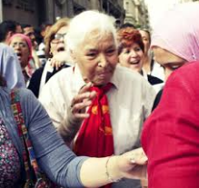

La femme vit dans un contexte difficile partout, dans certaines zones du monde il lui est encore plus complexe d’y vivre. Dans un pays où elles doivent se battre pour etre écoutées.
La condition d’une femme en Égypte ?
Tout d’abord pour situer le contexte, la condition de la femme en Égypte n’est pas simple, comme dans de nombreux pays du Moyen-Orient. Dans un pays majoritairement musulman on retrouve rapidement les stéréotypes que l’on connaît tous. Telles que les femmes sont à la maison, s’occupent des enfants et du ménage et l’homme travaille par exemple. Les femmes subissent des injustices très marquées par rapport aux hommes (pour en savoir plus sur le conditionnement des femmes ).
Photo de Nawal el Saadawi.
En général dans le pays moins de femmes font des études mais elles réussissent très bien. Le taux de femmes présentes sur le marché du travail est très faible 24%. Nawal el Saadawi était une écrivaine et psychiatre égyptienne. Elle est née 27 octobre 1931 à Kafr Tahlah en Égypte et décédée le 21 mars 2021 au Caire en Egypte. Elle a fait des études de médecine.
Qui était Nawal el Saadawi ?
Nawal el Saadawi sort avec son diplôme en poche de l’université du Caire en 1955. Elle va travailler pendant 14 ans, en tant que directrice générale de l’éducation au ministère de la Santé. Connue pour son caractère bien trempé, elle n’avait pas peur d’affronter ceux qui la défiaient. Comme par exemple le président Anouar el Sadate. En effet, incarcérée à la suite de son refus de se soumettre aux lois du président Anouar. Libérée lors du changement de président. Suite à cet évènement elle va créer une association pour l’entraide entre les femmes. L'association malheureusement ne durera pas longtemps, bannie en 1991. L’épreuve la plus difficile à laquelle elle a dû faire face c’est de se battre dans un pays très conservateur.
Son ouvrage considéré comme scandaleux,
Elle a publié son premier livre qui se prénomme « La femme et le sexe » en 1969. Cet ouvrage est considéré comme un outrage aux valeurs du pays.En raison de ses sujets tabous tels que le sexe et la religion. Ces sujets sensibles, sont très peu évoqués publiquement dans ces pays. Toutefois il a été l’élément déclencheur de la création d’une vague de féminisme en Egypte. Suite à cette publication, elle a dû être congédiée de son poste au ministère de la santé. Donc après cela elle va poursuivre pleinement son métier d’écrivaine. Elle a pris part dans de nombreux combats tels que le port du voile, l’assujettissement des femmes par rapport aux hommes. Ses fortes opinions, l'on qualifié « d’ennemie de l’islam ». Mécontents de ses convictions, elle recevait des menaces de la part des hommes de son pays.
Ils veulent la soumettre à l’exil. En 1996 elle a continué son affront contre les politiques Égyptiennes. En 2007, elle va même publier une pièce de théâtre qui se nomme « Dieu démissionne de la réunion au sommet ». Le livre qui découle de cette pièce est directement interdit de vente. Néanmoins elle ne se laisse pas faire, appuyée par de nombreuses femmes qui vont la rejoindre. En 2008 Nawal el Saadawi va remporter son procès, elle évite l’exil. Cependant, elle va rester vivre aux Etats-Unis. Depuis là-bas, elle continue de soutenir les Egyptiennes.